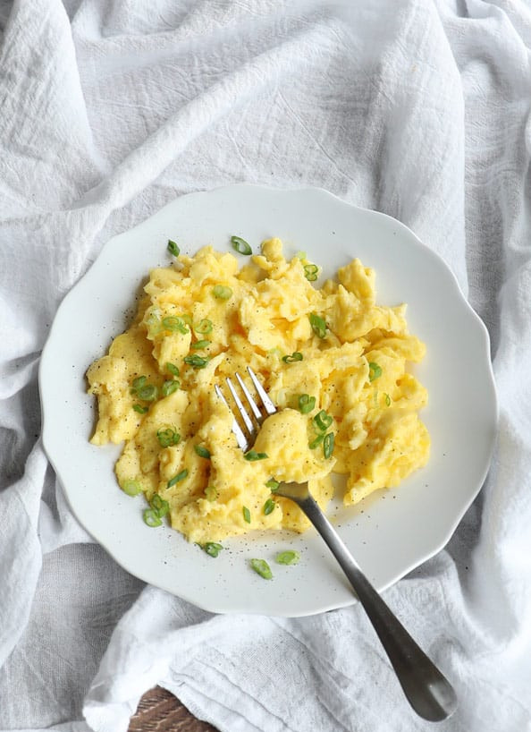

Scrambled Eggs

Description
- Prep Time: 3 min
- Cook Time: 3 min
- Total Time: 6 min
I have been eating scrambled eggs for daaaays now.
Why? Well, they are delicious. Obviously. But also EASY.
They are perfect for breakfast, lunch, and dinner after all.
Ingredients
- 4 large eggs
- 1/4 cup half n half
- 1/4 tsp salt
- 1 tbsp unsalted butter
- black pepper, for serving
- fresh chopper herbs, for serving
Instructions
- In a medium mixing bowl, aggressively whisk together the eggs, half-n-half,
and salt until the mixture is uniform in color and texture, and is light and foamy,
without any separate streaks of yolk or whites.
- Melt butter in nonstick pan over medium heat
- Add eggs to center of the pan and reduce heat to medium-low
- Wait for the edges to just barely start to set, then using a rubber spatula,
gently push the eggs from one end of the pan to the other.
- When eggs are mostly cooked, with big pillow-y folds, but still look wet, slowly fold eggs into itself.
- Remove from the heat when eggs still shimmer with moisture
- Transfer to serving plates. Finish with pepper and chopped freshed herbs